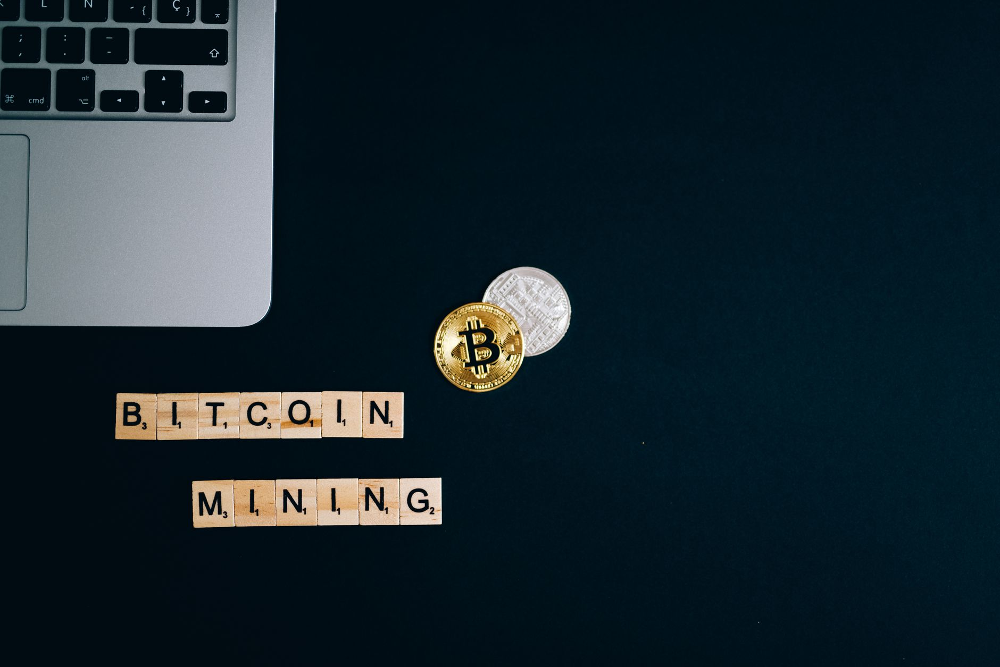

Are you considering investing in silver but unsure whether to buy silver mining stocks or hold physical silver? Both options offer a path to potential profits, but they come with distinct advantages and disadvantages. At Fused Distribution, we stock a wide variety of silver products and understand the complexities involved in choosing the right investment strategy. This guide breaks down the key differences, helping you make an informed decision that aligns with your financial goals and risk tolerance. We recommend carefully considering your investment timeline and overall portfolio strategy before committing to either path.

Understanding the Two Approaches
Investing in silver can be a smart move, especially during times of economic uncertainty. However, there are two primary ways to gain exposure to the metal:
- Silver Mining Stocks: These represent ownership in companies that actively mine and process silver. Their value fluctuates based on the company’s performance, silver prices, and broader market conditions.
- Physical Silver: This involves purchasing actual silver bullion - coins, bars, or rounds - held in your possession or stored securely. Its value is directly tied to the spot price of silver.
Let’s explore each option in detail.

Silver Mining Stocks: A Risky, Potentially Rewarding Bet
Investing in silver mining stocks can offer the potential for significant returns if the companies you invest in perform well. However, it’s a higher-risk strategy. The price of a mining stock is influenced by many factors beyond just the price of silver. These include:
- Operational Costs: Mining is an expensive undertaking. Higher operating costs can erode profits.
- Geological Risks: Mining sites can experience unexpected geological challenges, leading to delays and increased expenses.
- Management Quality: The competence and decisions of the company’s leadership significantly impact its success.
- Macroeconomic Factors: Interest rates, inflation, and global economic trends can all affect mining company profitability.
Despite these risks, some silver mining stocks have historically delivered strong returns. For example, during periods of rising silver prices, stocks like Pan American Silver (PAA) have seen substantial gains. However, during periods of declining silver prices, those same stocks can suffer significant losses. As of November 2023, the average PAA stock price was $13.68, a significant fluctuation from its peak in 2021. Comparable Statistic: A report indicated that the average annual return of silver mining stocks over the past 10 years has been approximately 6.8% (as of November 2023). This is compared to the average annual return of the S&P 500, which was around 10.5% over the same period.
Physical Silver: A Stable, But Less Volatile, Option
Holding physical silver offers a more direct connection to the metal itself. It’s generally considered a more stable investment than mining stocks, as its value is primarily determined by the market price of silver. However, it also comes with its own set of considerations:
- Storage Costs: You’ll need a secure place to store your silver, which could involve costs for a safe deposit box or a professional vault.
- Insurance: You’ll need to insure your silver against theft or damage.
- Liquidity: Selling physical silver can take time, as you need to find a reputable dealer or buyer.
- Premium over Spot Price: You’ll typically pay a premium above the spot price when purchasing physical silver, which can reduce your overall return. As of November 2023, the spot price of silver was $29.16 per ounce, but you might pay around $29 - $30 for an ounce of bullion.
Comparable Statistic: Historically, the spread between the spot price of silver and the retail price of silver bullion has averaged around 5-10%. This means you’ll always pay a premium over the base price.
Silver Mining Stocks vs. Physical Silver: A Detailed Comparison
Let’s break down the key differences between these two approaches: | Feature | Silver Mining Stocks | Physical Silver | |--------------------|----------------------|-----------------| | Risk Level | High | Moderate | | Potential Return | High | Moderate | | Volatility | High | Low | | Storage | Not Applicable | Required | | Liquidity | Generally High | Lower | | Control | Ownership stake | Direct ownership | | Diversification | Can be diversified | Limited |
The Impact of Silver Prices
The price of silver is the most critical factor influencing both strategies. When silver prices rise, both mining stocks and physical silver tend to increase in value. Conversely, when silver prices fall, both investments can suffer. However, the magnitude of the impact can differ. Mining stocks are often more sensitive to short-term price fluctuations, while physical silver tends to be more stable over the long term.
How Much to Invest
There’s no magic number for how much to invest in either silver. It depends on your individual financial situation, risk tolerance, and investment goals. A common rule of thumb is to allocate no more than 5-10% of your portfolio to precious metals. Start small and gradually increase your exposure as you become more comfortable.
Getting Started: A Step-by-Step Guide
- Research: Thoroughly research silver mining companies before investing in stocks. Analyze their financial statements, management team, and mining operations.
- Secure Storage: If you choose physical silver, determine the best way to store it securely. Consider a safe deposit box, a home safe, or a professional vault.
- Purchase: Buy silver mining stocks through a brokerage account or purchase physical silver from a reputable dealer.
- Diversify: Don’t put all your eggs in one basket. Diversify your investments across different asset classes.
Common Mistakes to Avoid
- Investing Based on Hype: Don’t chase silver based on short-term market trends. Make informed decisions based on fundamental analysis.
- Ignoring Storage Costs: If you choose physical silver, factor in the costs of storage and insurance.
- Overpaying for Physical Silver: Shop around for the best prices and avoid paying excessive premiums.
- Lack of Research: Failing to research silver mining companies before investing in their stocks can lead to significant losses.
The Future of Silver
Analysts predict continued demand for silver, driven by its use in industrial applications, jewelry, and as a hedge against inflation. According to a report, global mine production of silver is expected to increase by 3.1% to 683.7 million ounces in 2023. This suggests a potentially positive outlook for both silver mining stocks and physical silver.
Conclusion
Choosing between silver mining stocks and physical silver depends on your individual circumstances. Mining stocks offer the potential for higher returns but come with greater risk. Physical silver provides a more stable, albeit less volatile, investment. At Fused Distribution, we encourage you to carefully consider your options and consult with a financial advisor before making any investment decisions. We recommend starting with a small allocation and gradually increasing your exposure as you gain experience and confidence. Consider exploring our range of silver bullion products to begin your investment journey.